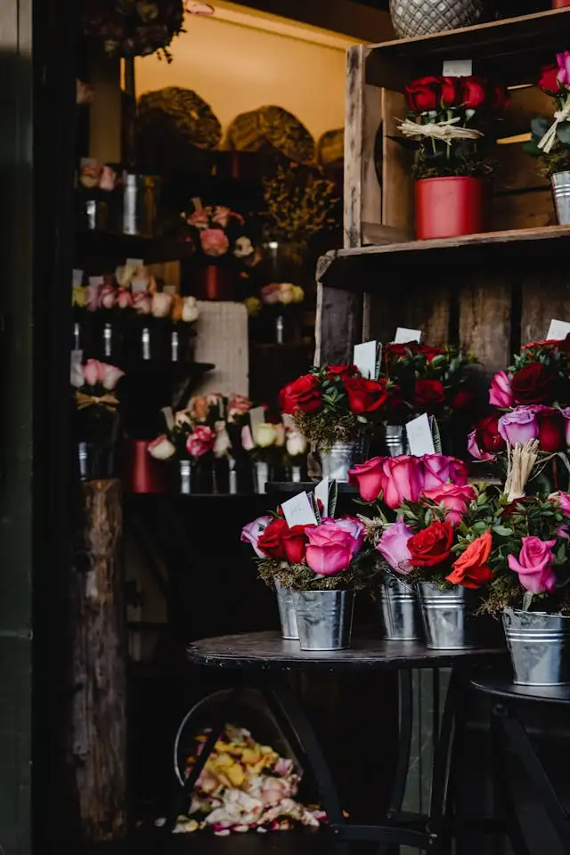
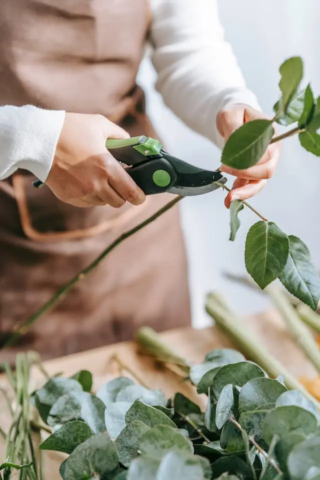
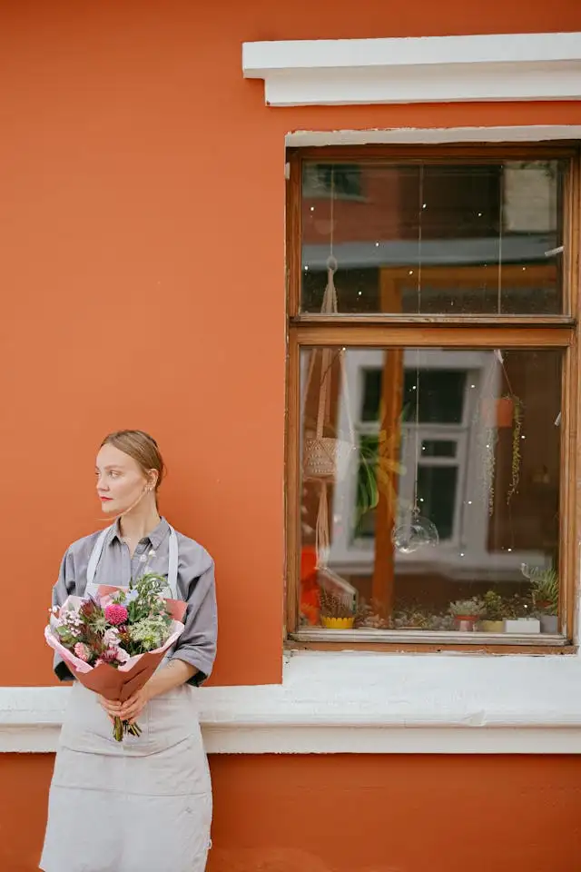

Blooming Beauty for Every Moment
Fresh seasonal flowers, handcrafted bouquets, and elegant floral arrangements designed
with love, care, and a personal touch.

Our Flower Shop
Welcome to our little world of flowers, where every bouquet is made with love and care. We believe flowers can brighten a day, celebrate special moments, and bring people closer together. Our shop is filled with fresh seasonal blooms, soft colours, and natural beauty. Every arrangement is designed to feel personal and unique. Whether it is a small gift or a large celebration, we want every customer to feel welcome here. We carefully select flowers to ensure freshness and quality every day. Creating warm and beautiful floral experiences is at the heart of everything we do.

Our Creative Process
Every floral arrangement begins with carefully chosen fresh flowers and greenery. We take time to match colours, textures, and shapes to create a natural and elegant design. Each bouquet is handcrafted with attention to every small detail. We believe the creative process should feel calm, thoughtful, and inspiring. From the first stem to the final ribbon, every step is done with care. Seasonal flowers help us create arrangements that feel fresh and full of life. Our goal is to make every bouquet look beautiful and feel meaningful.

Meet Our Team
Our team is made up of passionate florists who truly love what they do. We enjoy creating floral designs that bring happiness and emotion to people’s lives. Every member of our team adds their own creativity and personal touch to each arrangement. We work together in a warm and friendly atmosphere filled with inspiration and fresh flowers. Attention to detail and care for our customers are very important to us. We love helping people choose flowers for both everyday moments and special occasions. Sharing beauty through flowers is what inspires us every day.
Floral Moments
A collection of beautiful floral creations, behind-the-scenes moments, and the artistry that brings
every bouquet to life.
Handcrafted Bouquet Design
Watch as fresh seasonal flowers are thoughtfully selected and brought together into a beautiful handcrafted bouquet. Every stem is chosen with care to match colour, texture, and natural shape. Our florists work gently and precisely to create a balanced and elegant arrangement. You can see how simple blooms slowly transform into something truly special. Each step is done by hand, with attention to detail and a calm creative flow. The result is a bouquet that feels natural, warm, and full of life. It is a small glimpse into the art behind every floral design we create.
Behind the Floral Process
This video takes you behind the scenes of our floral studio, where every arrangement begins with fresh, seasonal flowers. We carefully prepare each stem, removing imperfections and selecting only the best blooms. The process is slow and thoughtful, allowing creativity to guide every decision. Colours and shapes are combined in a way that feels natural and harmonious. You will see how ideas gradually turn into real floral compositions. Every detail matters, from the first selection to the final arrangement. It is a quiet look into the care and passion behind our work.
A Day in Our Flower Shop
Step into our flower shop and experience the warm atmosphere where all our creations come to life. The day begins with fresh deliveries of flowers filled with colour and fragrance. Our team works together, preparing bouquets for different occasions and special moments. Customers come in looking for something meaningful, and we help them choose with care and attention. Throughout the day, the shop is filled with creativity, conversation, and the beauty of nature. Every arrangement is made with a personal touch and genuine passion. It is a simple but inspiring glimpse into our everyday world.